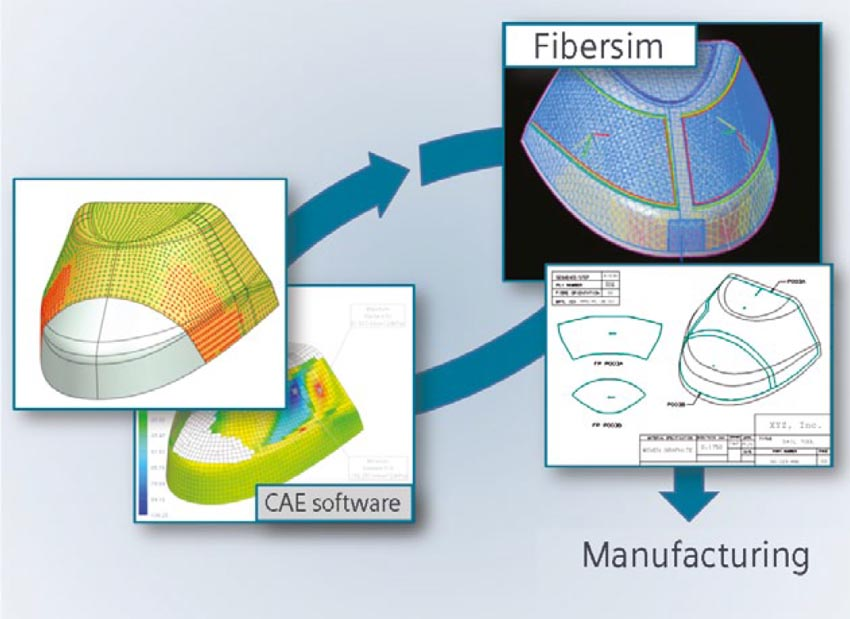

Siemens NX - CAD/CAM/CAE PLM-система
Набор программных решений NX позволяет полностью преобразовать процесс разработки изделия, а также повысить эффективность выполнения его отдельных этапов. NX предоставляет лучшие в отрасли функциональные возможности для различных направлений автоматизированного проектирования, таких как CAD, CAM, CAE и PDM, которые позволяют успешно осуществлять проекты по разработке изделий любой сложности.
Благодаря применению методов синхронного моделирования упрощается обработка моделей из других CAD/CAM/CAE систем переданных от заказчиков.
В модуле Modeling разрабатываются модели изделий и технологического оснащения для производства деталей из композиционных материалов.
По моделям NX8 выполняется:
подготовка конструкторской документации в модуле Drafting Siemens NX;
анализ процесса RTM и вакуумной инфузии в програмном модуле ESI Group - Composites Simulation Suite Pam-RTM;
раскрой и укладка слоев детали в программе FiberSim;
создание программ для станков с ЧПУ в программе PowerMill.
FiberSIM - полноценное программное решение для проектирования и производства изделий из композиционных материалов.
FiberSIM поддерживает каждый этап разработки деталей из композитов:
позволяет инженерам определять параметры пакетов и применять наиболее эффективную методику проектирования при создании слоев, будь то послойное, зонное или структурное проектирование;
автоматически создает геометрию слоев, определяя переходы с последовательностью и формой сбега, которые хранятся в CAD-модели, в противовес утомительному процессу создания CAD кривых для каждого слоя вручную;
создает поверхности переменного смещения и твердые тела, включая поверхности для проверки цифрового макета на самопересечения, а также результирующие поверхности для сопрягаемых компонентов и поверхности для изготовления оснастки;
производит проверку и передачу конструкторских требований путем автоматического создания технической документации и/или таблиц Microsoft Excel;
моделирует возможность изготовления деталей на основе свойств материалов и технологического процесса, давая возможность обратной связи на ранних этапах и повышая эффективность разработки;
определяет производственные границы и операции, такие как разрезы, надрезы и траектории ленты для снижения себестоимости и времени, затрачиваемого на изготовление детали;
автоматически создает технологическую документацию для цехов, обеспечивая точную укладку и качество изделия;
автоматически создает производственные данные, такие как развертки для работы раскройных станков, файлы для систем лазерной проекции, машин для выкладки волокна и ленты, и обеспечивает возможность передачи этих данных на следующие производственные этапы.
ESI Group - Composites Simulation Suite - система виртуального прототипирования, обеспечивает моделирование поведения изделия из композиционных материалов в процессе испытаний, изготовления и эксплуатации.
Модули: PAM-RTM, PAM-Form, PAM-Crash, SYSPLY.
Клиентский портал ESI Group предоставляет лицензионным пользователям ESI Group доступ к необходимой информации по продуктам, обучениям, советам по использованию и документации.
PAM-RTM - решение для моделирования операций пропитки связующим веществом композитных материалов.
Возможности:
RTM – моделирование инжекции связующего в закрытую форму;
VARI – моделирование процесса вакуумной инфузии;
прогнозирование образования дефектов пропитки: неполная пропитка вследствие застывания смолы, пористость, образование утолщений и др.;
моделирование с учетом изменения проницаемости после искажения волокон на стадии предварительной формовки;
автоматический подбор оптимальной скорости подачи связующего для минимизации образования дефектов;
инструменты для проверки процессов пропитки и определения лучшей комбинации связующего и армированной основы.
PAM-Form - решение для моделирования процесса формовки изделия.
Моделируемые процессы:
термоформовка;
штамповка;
формовка диафрагмой;
ручная выкладка;
валковая формовка.
Рассчитываемые параметры:
cкорость инструмента;
задание фиксирующей системы;
подбор усилий фиксации;
выбор процесса;
температура;
выбор параметров диафрагм (материал, толщина);
цикл формовки;
возможность моделирования плоской выкройки.
Модели материалов.
В PAM-FORM созданы специальные модели материалов для следующих компонентов:
cухие композитные основы;
препреги;
ленты;
тканые основы;
NCF.
PAM-Crash - специализированный программный продукт, предназначенный для конечно-элементного моделирования и анализа ударопрочности и аварийных столкновений для таких сложных изделий и конструкций, как автомобили, суда, самолеты и т.д. PAM-CRASH 2G резко сокращает необходимое количество физических натурных испытаний изделия на прочностные экстремальные характеристики в процессе его создания, и, таким образом, позволяет существенно ускорить выход изделия на рынок.
Возможности программного комплекса: Моделирование самых разнообразных ударных воздействий на объект позволяет с высокой точностью предвидеть все последствия, возникающие в механической структуре объекта; это создает возможность уже на уровне проектирования изделия, то есть до изготовления физического прототипа, принять необходимые меры по повышению его ударопрочности и безопасности.
В систему также входит модуль Visual Crash for PAM, который содержит базу из 3D-моделей манекенов, барьеров и конструкционых элементов для проведения тестов безопасности человека при авариях. Манекены позволяют оценить силовое воздействие на человека спереди, с боков и сзади.
SYSPLY - это программный комплекс в котором реализована возможность проведения всех видов анализа композиционных материалов. Возможно моделирование композиционных материалов с учетом геометрии детали, заданием свойств и направления укладки.
PowerMILL - лидирующая в мире САМ-система для обработки поверхностей сложных форм, встречающихся в аэрокосмической, автомобильной и станко-инструментальной промышленностях и при производстве медицинского оборудования.
Многопоточная обработка данных PowerMILL позволяет задействовать всю мощь многоядерного процессора, тем самым значительно сокращая общее время вычислений.
PowerMILL дает возможность выполнять многие операции в фоновом режиме, позволяя при этом продолжать создание, редактирование и даже генерацию траекторий в активном режиме.
Многопоточная обработка процессов осуществляется и в фоновом, и в активном режимах, а значит NC файлы поступают на станки в кратчайшие сроки.
Имея полный контроль над редактированием траектории инструмента, можно удалять отдельные сегменты траектории, менять скорость подачи на определенных участках и настройки подводов, отводов и переходов без необходимости проведения повторных вычислений.
С помощью шаблонов можно настраивать алгоритмы работы PowerMILL в соответствии со стандартами вашего предприятия.
PowerINSPECT - лидирующее в мире аппаратно-независимое программное обеспечение для измерения деталей с помощью КИМ.
PowerINSPECT позволяет производить сложные измерения с помощью широкого круга измерительных устройств. Возможность работы с CAD-моделями и быстрота создания отчетов делают PowerINSPECT высокоэффективным программным обеспечением для измерения деталей сложной формы посредством координатно-измерительных машин.
Интеграция с другими системами, быстрота проведения измерительных процессов и простота в обращении делают PowerINSPECT предпочтительным программным обеспечением для работы с портативным измерительным оборудованием.